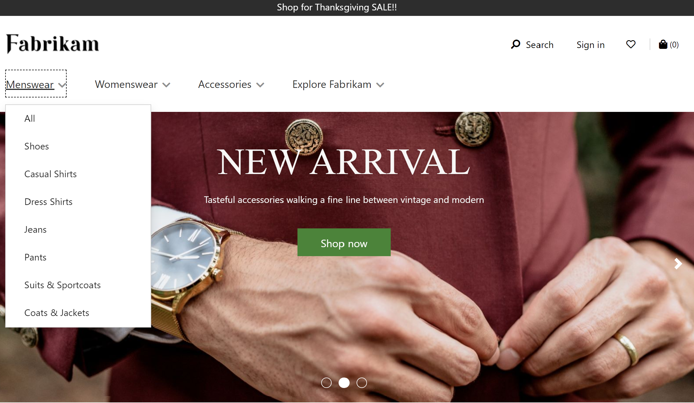

Navigation menu module
This topic covers navigation menu modules and describes how to add them to site pages in Microsoft Dynamics 365 Commerce.
Overview
The primary purpose of navigation menu modules is to allow site users to browse products and site pages according to the channel navigation hierarchy defined in Dynamics 365 Commerce headquarters. Items configured in a navigation menu module appear as site header navigation. Navigation menu modules also support static menu items that link to other pages on an e-Commerce site.
The navigation menu module can be added to the header module of a page. In the Fabrikam theme, the navigation menu shows two levels by default. In the Starter theme, the navigation menu shows three levels by default. To change to the number of levels, a view extension is required on the theme.
The following illustration shows an example of a navigation menu for the Fabrikam site with two levels of category hierarchy and some static menu items. 
Navigation menu module properties
| Property name | Value | Description |
|---|---|---|
| Source | Retail, Manual authoring, Retail and manual authoring | The Retail value allows the channel navigation hierarchy from Commerce headquarters to be displayed on the navigation menu. The Manual authoring value allows static menu items to be curated. The Retail and manual authoring value allows a mix of both. |
| Show category images | True or False | When enabled, this property displays category images on the navigation menu as defined in Commerce headquarters for each category. Added in Commerce release 10.0.14. |
| Enable multi-level navigation menu | True or False | When this property is enabled, the navigation menu can show multiple levels of the navigation hierarchy. This feature is available in the Dynamics 365 Commerce 10.0.15 release. |
| Number of levels | integer | This property defines the numbers of levels that should be shown if the Enable multilevel navigation menu property is set to True. |
| Static menu item | Array of values | Static menu items that associate a menu item name with a link to a static site page. You can create menu items below other menu items. By default, static menus appear at the root level and will be appended to the channel navigation hierarchy if it exists. |
| Show root menu | True or False | When this property is enabled, the navigation menu can be defined under a custom root (for example, Shop now). This feature is available in the Dynamics 365 Commerce 10.0.15 release. |
| Root menu | string | This property can be used to define text for a custom root if the Show root menu property is set to True. |
The following illustration shows an example of a category image displayed on the navigation menu for the Fabrikam site.

Add a navigation menu module to a header module
For details about how to add a navigation menu module to a header module, see Header module.